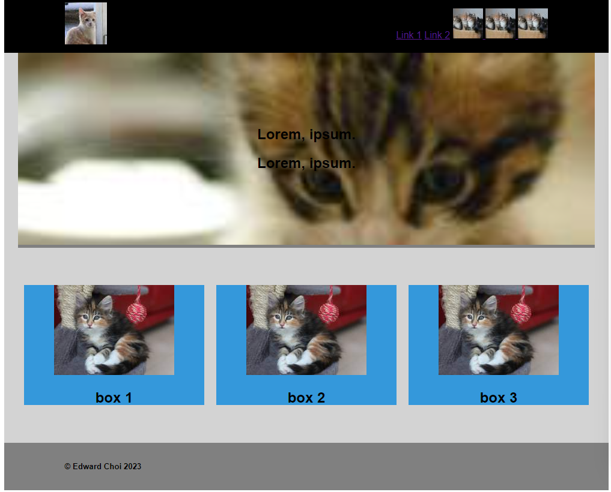
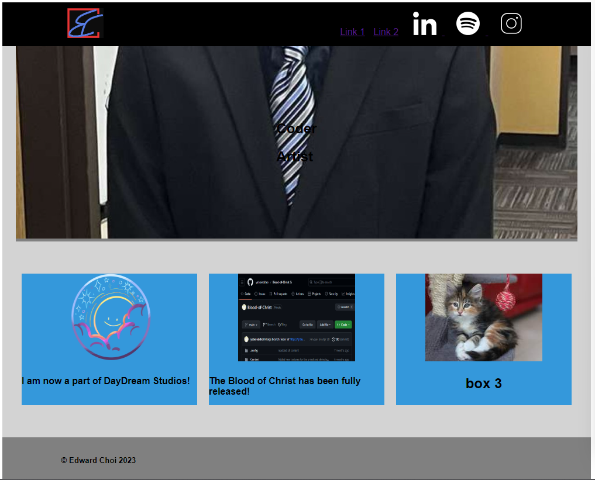

This will be a personal portfolio piece. I like this current layout, where it has a quick blurb about themselves at the top with an interesting graphic and divisions, and under that will be my pieces of work that I'd like to show off. I plan to have the top half of the page be an introduction to me, then the bottom half will be my latest work, then some upcoming projects.
This is the sketch I will be using. For narrower browsers and phones, the side pillars will be gone and the top items will condense into a dropdown menu. The top header will stay at the top when scrolling through the page.
This is the first version of this website. Everything still has placeholder images, and there are multiple features that dont work yet, like a collapsable menu at narrower windows, the text on the large image is not formatted properly, and the alignment on the boxes and certain links are not consistant yet. It's pretty cute though because all the images are kittens.
this is the first version with all my content added (except for box 3). as you can see there are still some formatting issues.